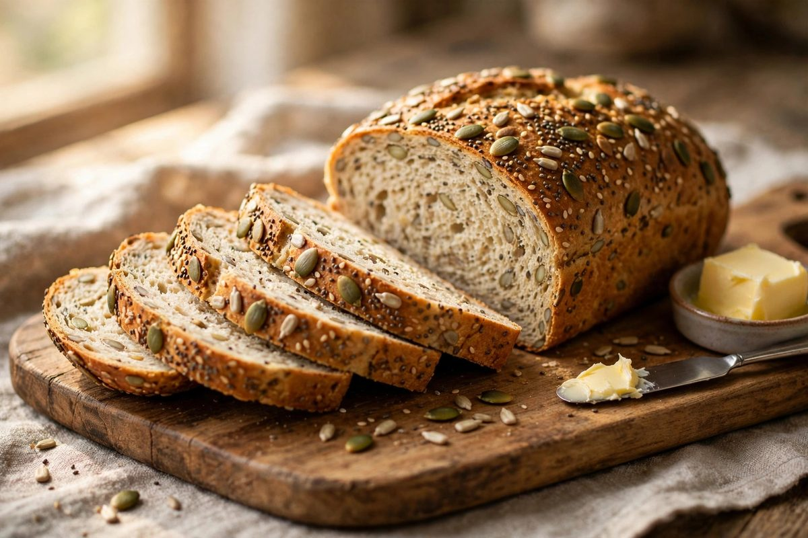

Home » Guides
Gluten-Free Bread

Good gluten-free bread is one of the hardest things to bake, and one of the most satisfying when it works. Without gluten, bread dough cannot stretch and trap gas the way wheat dough does, so gluten-free loaves are often dense, dry, or crumbly. But a few techniques, the right flour blend, and a little patience can produce a soft, sliceable loaf that toasts well and makes good sandwiches. This guide explains how gluten-free bread works and gives a practical method for baking it at home.
Why gluten-free bread is tricky
Wheat bread rises because gluten forms an elastic network that traps the gas produced by yeast. Without that network, the gas escapes and the loaf stays flat. Gluten-free bread solves this by using a wet, batter-like dough rather than a firm dough, and by adding binders such as xanthan gum or psyllium husk, which create a gel that traps gas. The dough is wetter and stickier than wheat dough, and it is poured or spooned into a tin rather than kneaded. It also needs a longer rise and careful handling, because it is more fragile.
A simple sandwich loaf
A reliable sandwich loaf uses 500 grams of gluten-free bread flour blend, 7 grams of instant yeast, a teaspoon of salt, a tablespoon of sugar, 2 tablespoons of olive oil, and about 450 millilitres of warm water. Mix the dry ingredients, add the oil and water, and beat for three to five minutes until the mixture is thick and sticky. Spoon it into a greased loaf tin, smooth the top with wet hands, and leave it to rise in a warm place for about an hour, until it reaches the top of the tin. Bake at 190 degrees Celsius for 45 to 50 minutes, until the crust is golden and the loaf sounds hollow when tapped.
Getting a good rise and crumb
Use warm water, not hot, because water that is too hot kills the yeast. Let the dough rise in a warm, draught-free place, and do not let it over-rise, because a gluten-free loaf that rises too far will collapse in the oven. Bake in a tin, which supports the soft dough, and use a smaller tin than you would for wheat bread. Adding an egg improves the structure and the colour. Brushing the top with milk or oil before baking gives a softer crust. Let the loaf cool completely before slicing, at least an hour, because cutting it hot makes it crumble.
Storing gluten-free bread
Gluten-free bread goes stale faster than wheat bread, so store it well. Keep it in a sealed bag or bread bin at room temperature for one to two days. For longer storage, slice the loaf and freeze the slices, then toast them straight from frozen. Do not store gluten-free bread in the fridge, because it dries out faster there. Toasting is the best way to revive a slice that has gone slightly stale. If you buy gluten-free bread, check the date and the ingredients, because some shop-bought loaves are high in sugar and additives.
Bread for the week
A weekly bread routine makes gluten-free bread affordable and fresh. Bake a loaf on Sunday, slice it once it is cool, and freeze the slices in a bag, so you can toast them one at a time during the week. Keep a second loaf in the freezer for busy weeks, and bake a fresh one when you have time. Try a different flour blend each month, and keep notes on which one gives the best rise and flavour. A home-baked loaf costs less than a shop-bought one and tastes better, and the routine becomes second nature after a few weeks.
Frequently Asked Questions
Why did my gluten-free loaf collapse?
It probably over-rose before baking, or the dough was too wet. Let it rise only until it reaches the top of the tin, and measure the water carefully.
Can I make gluten-free bread in a bread machine?
Yes, if your machine has a gluten-free setting. Use a recipe designed for the machine, and do not use the normal wheat cycle.
How do I stop gluten-free bread going stale?
Slice and freeze it on the day you bake it, then toast slices as needed. It keeps much better frozen than in the fridge.
Important: if you have celiac disease or a wheat allergy, always check labels and look for certified gluten-free products. This site is general information only — talk to your doctor or a registered dietitian before changing your diet.